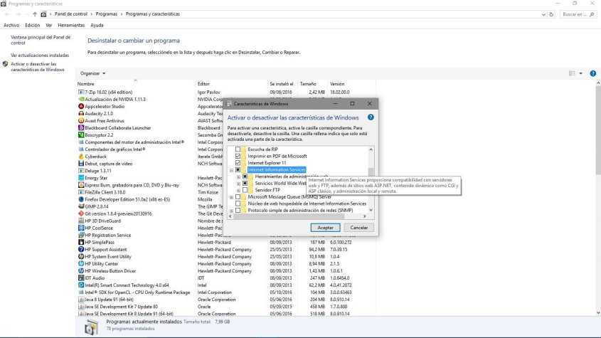
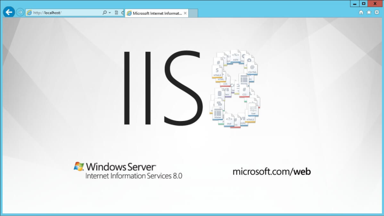

INSTALAR ISS EN WINDOWS 10
Si hemos visto las principales alternativas del mercado y hemos decidido optar por instalar
IIS en un Windows 10, deberíamos de saber algo: IIS no se instala, se habilita.
Es decir, IIS es un complemento a Windows, por lo que no tendremos que bajar ninguna
aplicación ni nada, simplemente tendremos que seguir unos pasos para tenerlo instalado y
habilitado.
Para instalarlo deberás hacer:
- Ingresar en Panel de Control.
- Programas.
- Dependiendo la vista que tengas podrías entrar en Activar o Desactivar características
de Windows en caso de no ver esa oción, presiona sobre Programas y Características.
- A la izquierda presiona sobre Activar o desactivar las características de Windows..

En este caso, sólo tendrás que seleccionar IIS (Internet Information Sever) y presionar en
aceptar, puedes seleccionar todas las opciones dentro de IIS para que se te habilite e instale,
no obstante, si no sabes muy bien si instalarlo y tienes disco duro, te recomiendo instalarlo todo
(a no ser, por ejemplo, que ya tengas un servidor FTP).
Una vez instalado ¡Felicidades, ya está todo listo!
Ahora puedes probar a poner la IP local (127.0.0.1) o directamente localhost en el navegador y
ya deberías de tener acceso.
